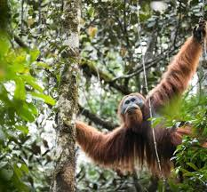

World Wildlife Fund
keto jane disa nga kafshet me te rrezikuara per zhdukje
| lojet |
numbri i mbeter |
| Orangutangu |
55000-65000 |
| Gorilla |
316,000 |
| Dink Delfine |
158-61 |
Orangutangu
Orangutangu i Sumatrës është ndër speciet më të rrezikuara midis majmunëve. Gjendet vetëm në provincat veriore dhe perëndimore të Sumatrës, në Indonezi. Fatkeqësisht ai po humb shpejt habitatin e tij natyror, për shkak të vendbanimeve të njerëzve.

Gorilla
Gorilla e maleve është zbuluar nga shkencëtarët në vitin 1902 dhe është një nga dy nënspeciet e Gorillës lindore.

Delfini Vaquita
Vaquita është një delfin shumë i vogël, që jeton ekskluzivisht në gjirin e Kalifornisë në Meksikë. Specia është në rrezik zhdukjeje, mbi të gjitha për shkak të rrjetave të përdorura për peshkim në ato zona.